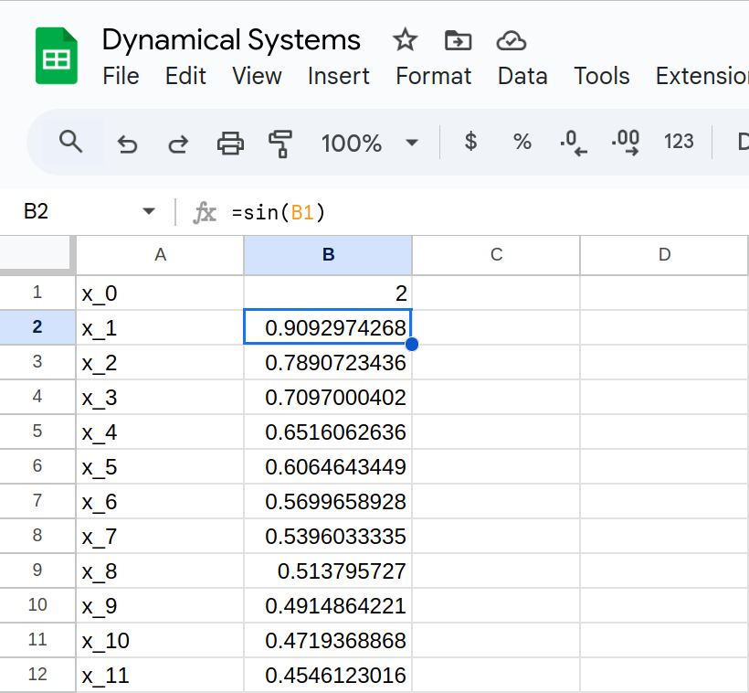

Dynamical Systems
and Feedback

A dynamical system is a system that
changes over time. Defined by:
changes over time. Defined by:
- State: variables representing current configuration
- Rules: equations defining how the system evolves
Classic Dynamical Systems
- Solar system
- Weather systems
- Economic systems
- Chemical reactions
- Electric Circuits
Dynamical systems are at the core of
science and the root of mathematics.
science and the root of mathematics.
The primary question of a dynamical system is:
Can we predict future states?
Function
\[S(x) = \sqrt{x}\]
Function
\[S(x) = \sqrt{x}\]
\[ S(36) = 6 \]
\[ S(20.25) = 4.5 \]
\[ S(2) \approx 1.41421356237 \]
Function

Feedback
{kind=link}
Feedback
\[S(x) = \sqrt{x}\]
\(x_0\)
\(x_1 = S(x_0) = \sqrt{x_0} \)
\(x_2 = S(x_1) = S(S(x_0)) = \sqrt{\sqrt{x_0}} \)
\(x_3 = S(x_2) = S(S(S(x_0))) = \sqrt{\sqrt{\sqrt{x_0}}} \)
\(x_1 = S(x_0) = \sqrt{x_0} \)
\(x_2 = S(x_1) = S(S(x_0)) = \sqrt{\sqrt{x_0}} \)
\(x_3 = S(x_2) = S(S(S(x_0))) = \sqrt{\sqrt{\sqrt{x_0}}} \)
Feedback
\[S(x) = \sqrt{x}\]
\(x_0\)
\(x_1 = S(x_0) = \sqrt{x_0} \)
\(x_2 = S(x_1) = S(S(x_0)) = \sqrt{\sqrt{x_0}} \)
\(x_3 = S(x_2) = S(S(S(x_0))) = \sqrt{\sqrt{\sqrt{x_0}}} \)
\(x_1 = S(x_0) = \sqrt{x_0} \)
\(x_2 = S(x_1) = S(S(x_0)) = \sqrt{\sqrt{x_0}} \)
\(x_3 = S(x_2) = S(S(S(x_0))) = \sqrt{\sqrt{\sqrt{x_0}}} \)
\(x_n = S^{n}(x_0) \)
Iterate
| \[S(x) = \sqrt{x}\] | \[\quad\] |
\(x_0 = 16\) \(x_1 = S^1(x_0)=4\) \(x_2 = S^2(x_0)=2\) \(x_3 = S^3(x_0)=1.4142...\) \(x_4 = S^4(x_0)=1.1892...\) \(\vdots\) |
Iterate
The orbit of \(x_0\) is the sequence generated by iterating
| \[S(x) = \sqrt{x}\] | \[\quad\] |
\(x_0 = 16\) \(x_1 = S^1(x_0)=4\) \(x_2 = S^2(x_0)=2\) \(x_3 = S^3(x_0)=1.4142...\) \(x_4 = S^4(x_0)=1.1892...\) \(\vdots\) |
Exercise
Determine the fate of the orbit of \(x_0=2\) in \[F(x) = \sin(x)\]
In other words, what can we say about: \[\lim_{n \to \infty} F^{n}(2) \]
Determine the fate of the orbit of \(x_0=2\) in \[F(x) = \sin(x)\]
Exercise
Determine the fate of the orbit of \(x_0=2\) in \[C(x) = \cos(x)\]
In other words, what can we say about: \[\lim_{n \to \infty} C^{n}(2) \]
Determine the fate of the orbit of \(x_0=2\) in \[C(x) = \cos(x)\]

Remember our algorithm for square root?
Algorithm — Square Root
Given a number \(x\), calculate \(\sqrt{x}\) to desired precision.
- Make a guess, \(g\).
- Calculate new guess: \(\frac{1}{2}( g + \frac{x}{g} )\)
- Repeate step (2) as many times as you like, plugging in the new guess each time.
Algorithm — Square Root
Given a number \(x\), calculate \(\sqrt{x}\) to desired precision.
- Make a guess, \(g\).
- Calculate new guess: \(\frac{1}{2}( g + \frac{x}{g} )\)
- Repeate step (2) as many times as you like, plugging in the new guess each time.
\[ x_0 = g \]
\[ x_{i+1} = \frac{1}{2}\left(x_i + \frac{x}{x_i}\right) \]
Fixed Point
A fixed point is a value that stays the same from one step to
the next in a dynamical system.
The output is the same as the input.
Given \(S(x)=\sqrt{x}\),
\[S(1) = 1\]
Fixed Point
A fixed point is a value that stays the same from one step to
the next in a dynamical system.
The output is the same as the input.
Given \(S(x)=\sqrt{x}\),
\[S(1) = 1\]
\[S(0) = 0\]
Finding Fixed Points
\[\text{Output} = \text{Input}\]
\[S(x) = x\]
Finding Fixed Points
\[\text{Output} = \text{Input}\]
\[S(x) = x\]
\( \sqrt{x} = x\)
\( x = x^2 \)
\( x^2 - x = 0 \)
\( x(x-1) = 0 \)
\( x = 0, 1 \)
\( x = x^2 \)
\( x^2 - x = 0 \)
\( x(x-1) = 0 \)
\( x = 0, 1 \)
Recall our \(\sin\) and \(\cos\) systems.
Those convergence values were fixed points.
Those convergence values were fixed points.
|
\[\sin(x) = x\]
|
\(\quad \quad \) |
\[\cos(x) = x\]
|
Periodic Orbit
A periodic orbit, or cycle, is a repeating sequence.
Finding Cycles
2-Cycle: \( \quad G(G(x)) = x \)
3-Cycle: \( \quad G(G(G(x))) = x \)
Finding Cycles
2-Cycle: \( \quad G(G(x)) = x \)
3-Cycle: \( \quad G(G(G(x))) = x \)
\(n\)-Cycle: \( \quad G^{n}(x) = x \)
Analysis of mathematical dynamical systems like these isn't just intellectually stimulating.
We observe behaviors like this in real dynamical systems.
- Physical systems: orbits(!), phases, tides
- Weather: seasons, atmospheric convection, water cycles
- Population: illness, predator-prey, consequence of policies, external factors like changes to environment
- Psychology: modes of cognition and learning, response to stimuli
- Politics: pendulum swing of political parties, cultural waves
- Electronics: harnessing feedback, limit cycle, amplification
Pretty much everything is a dynamical system with feedback...Ok not everything
{kind=link}

{kind=link}
{kind=link}
Population Dynamics
\[ P_{n+1} = R P_{n} \]
Population Dynamics
\[ P_{n+1} = R P_{n} \]
\(R\) is a parameter representing growth-rate.
We analyze this system by looking at its behavior for various values of \(R\text{.}\)
We analyze this system by looking at its behavior for various values of \(R\text{.}\)
What are interesting values of \(R\text{?}\)
\( A_{n+1} = 1.1 A_{n} \)
\( B_{n+1} = 1.0 B_{n} \)
\( C_{n+1} = 0.9 C_{n} \)
\( B_{n+1} = 1.0 B_{n} \)
\( C_{n+1} = 0.9 C_{n} \)
Slightly Less Trivial Population Dynamics
\[P_{n+1} = r P_{n} (1 - P_{n}) \]
Slightly Less Trivial Population Dynamics
\[P_{n+1} = r P_{n} (1 - P_{n}) \]
\(r\) is a parameter that encapsulates growth and carrying capacity. \(P\) is a population density.
Slightly Less Trivial Population Dynamics
\[P_{n+1} = r P_{n} (1 - P_{n}) \]
Analyze this system for:
\( r = 2.5 \)
\( r = 3 \)
\( r = 3.5 \)
\( r = 4 \)
\( r = 2.5 \)
\( r = 3 \)
\( r = 3.5 \)
\( r = 4 \)
| \(\quad \) |
Determinism
Given a dynamical system and inital conditions, if I ask you to find the \(83^{\text{rd}}\) term, you should all get exactly the same answer. That is deterministic, or not random.
Chaos
A system is chaotic if it exhibits
sensitive dependence on initial conditions.
sensitive dependence on initial conditions.
\(x_0 = 8 \)
\(x_0 = 8.00001\)
\(x_0 = 8.00001\)

https://twitter.com/standupmaths/status/741251532167974912
Deterministic Vs. Predictable
But, even if it were the case that the natural laws had no longer any secret for us, we could still only know the initial situation approximately. If that enabled us to predict the succeeding situation with the same approximation, that is all we require, and we should say that the phenomenon had been predicted, that it is governed by laws. But it is not always so; it may happen that small differences in the initial conditions produce very great ones in the final phenomena. A small error in the former will produce an enormous error in the latter. Prediction becomes impossible, and we have the fortuitous phenomenon.Poincaré
Complexity Science
In chaos, we see simple systems exhibit infinitely complex behaviors.
Complexity science is in some ways a converse of chaos: Profoundly complex systems may exhibit order.
Dynamical Systems
| Feedback | The output of a system is fed back into the input |
| Iteration | One step of a feedback loop |
| Orbit | The sequence generated by iterating from a particular initial condition |
| Fixed Point | A value such that the output of an iteration is equal to the input |
| Cycle | A periodic orbit, repeating values |
| Deterministic | When a system does not involve randomness, and future states can be calculated exactly. |
| Chaotic | When the orbit of a dynamical system is sensitively dependent on the initial conditions. |
References and Resources
- https://www.complexityexplorer.org/explore/glossary
- Mitchell, M. (2009). Complexity: A Guided Tour. Oxford University Press, Inc., USA.
- Strogatz, S. H. (2000). Nonlinear Dynamics and Chaos: With Applications to Physics, Biology, Chemistry and Engineering. Westview Press.
- Veritasium — Chaos: The Science of the Butterfly Effect
- 3Blue1Brown — Newton's fractal (which Newton knew nothing about)
©2025 Jedediyah Williams
This work is licensed under the Creative Commons
Attribution-NonCommercial-ShareAlike 4.0 International License.

To view a copy of this license, visit https://creativecommons.org/licenses/by-nc-sa/4.0/.